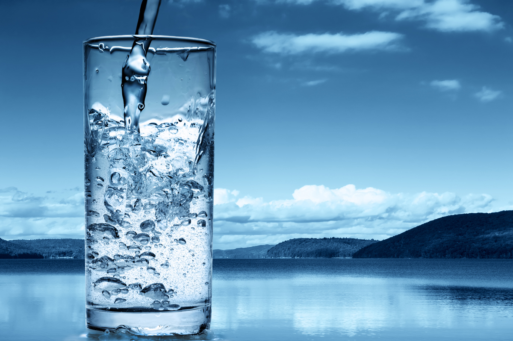
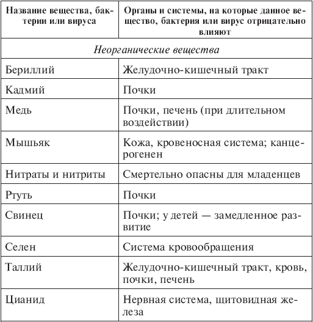
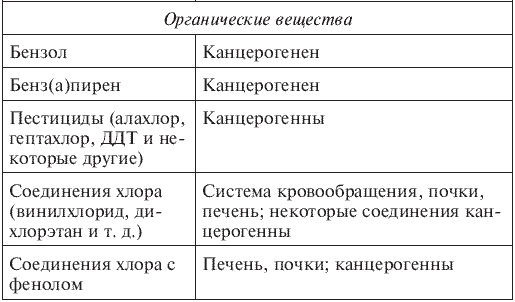
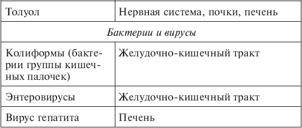

Питьевая вода . Чем грозит заражение питьевой воды

Начну с того, что чистая вода и питьевая вода – отнюдь не синонимы. Чистая вода, в отличие от воды питьевой, неопределенный термин, и мы его далее использовать не будем. Почему? Потому, что для химика «чистая вода» – дистиллят; для рыболова – та, в которой водится рыба; для микробиолога – та, в которой могут обитать хотя бы бактерии, а для производственника – та, которая годится, скажем, для флотации полезных ископаемых. С питьевой водой проще: она должна отвечать стандартам.
Существует несколько стандартов на питьевую воду, и мы коснемся четырех наиболее важных: российского стандарта, определяемого соответствующими ГОСТами [1],[12] стандарта ВОЗ (Всемирной организации здравоохранения), стандарта США и стандарта стран Европейского союза (ЕС). Три последних стандарта приведены в книге [17], благодаря которой мы можем получить информацию о том, что понимается под питьевой водой в Америке и Европе. Упомянутые мной издания [1, 17] построены примерно одинаково: вначале идут таблицы с перечислением вредных веществ и указанием ПДК, а затем описания методик, по которым определяется концентрация в воде того или иного компонента. В методиках подробно описано, с помощью каких реактивов и приборов и как конкретно производятся анализы. Отмечу, что в наших прежних ГОСТах таких методик около тридцати, а в книге [17] вдвое больше.
В табл. 3.1 приведен краткий перечень неорганических и органических веществ, а также бактерий и вирусов, которые при попадании в организм человека из питьевой воды оказывают неблаготворное влияние на органы и системы (подробнее см. [17]).
Таблица 3.1. Влияние неорганических и органических веществ, бактерий и вирусов на организм человека (при их попадании из питьевой воды)



Комментарий (к табл. 3.1).
1. В таблицу не включены, например, сера, хлор, железо, так как вред, наносимый ими, намного меньше по сравнению с воздействием мышьяка, ртути, свинца и других приведенных выше веществ. При избытке хлора или сернистых соединений водопроводная вода имеет неприятный запах. Естественно, такая вода для питья не годится, ее следует очищать с помощью фильтра или покупать питьевую воду в магазине. Избыток железа – «ржавая» вода тоже не слишком годится для питья; ее также следует очищать. Кроме того, придется очищать от ржавчины раковину и ванну. Но это все мелочи по сравнению с канцерогенными свойствами мышьяка.
2. В таблицу не включено множество органических соединений, вредных в той или иной степени. От некоторых неназванных мной субстанций может случиться расстройство желудка, анемия или аллергия, повысятся холестерин или артериальное давление. Другие грозят гораздо более серьезными расстройствами, но перечислить все в данной книге невозможно. Пожалуй, и незачем; в самом деле, нужна ли вам информация об опасности гексахлорциклопентадиена, влияющего на почки? Это слово и выговорить-то трудно…
Но кое о каких субстанциях следует поговорить подробнее. Во-первых, о пестицидах: эта группа разнообразных веществ, используемых в сельском хозяйстве для борьбы с сорняками, насекомыми и грызунами, включает более сорока наименований. Среди пестицидов есть сравнительно безвредные, но все в той или иной степени ядовиты, и, по крайней мере, четыре-пять из них способствуют возникновению рака (канцерогенны). С полей они попадают в водные бассейны, а оттуда могут проникнуть в питьевую воду. Если концентрации самых опасных пестицидов очень малы, порядка нанограмм-микрограмм на литр, они не наносят нам вреда – организм с ними справляется.
Во-вторых, хлор. Хлором обеззараживают воду, поскольку этот газ – мощный окислитель, способный уничтожать болезнетворные микроорганизмы. Однако в реках и озерах, откуда ведется водозабор, присутствует множество веществ, попавших туда со сточными водами, и с некоторыми из них хлор вступает в реакцию. Результат – гораздо более неприятные субстанции, чем сам хлор. Например, соединения хлора с фенолом (который, кстати, присутствует в Неве); они придают воде неприятный запах, влияют на печень и почки, но в малых концентрациях не очень опасны. Однако возможны соединения хлора с бензолом, толуолом, бензином и так далее, с образованием диоксина, хлороформа, хлортолуола и других канцерогенных веществ.
Спрашивается, нельзя ли обеззараживать воду иначе, без хлора (а также без фтора, который тоже небезопасен)? Поскольку использовать серебро для этой цели дороговато, был предложен метод озонирования,[13] но оказалось, что озон тоже вступает в реакцию со многими веществами в воде – с тем же фенолом, и образовавшиеся в результате продукты еще токсичнее хлорфенольных.
Выход, вероятно, в том, чтобы обеззараживать воду с помощью ультрафиолетового излучения. Этот метод сейчас внедряется в Петербурге, и есть надежда, что через несколько лет проблемы, связанные с применением хлора, фтора и озона, уйдут в прошлое.
В-третьих, бенз(а)пирен и другие ядовитые продукты выхлопных газов по-прежнему являются проблемой. Как уже упоминалось, при анализах проб петербургской воды бенз(а)пирен не определяется, но в других регионах дело обстоит иначе (взять хотя бы Красноярск с его алюминиевыми заводами). Кроме того, данные вещества отравляют не только питьевую воду, но и воздух, которым мы дышим.
3. По данным табл. 3.1, наличие меди и селена в воде ведет к весьма неприятным последствиям. Но загляните в табл. 2.2: медь и селен там присутствуют в качестве необходимых нам микроэлементов! Противоречие? Вовсе нет – все дело в дозе: малая доза – лекарство, слишком большая – яд. Хлор, кстати, нам тоже необходим, и в довольно больших количествах, но только не в виде хлороформа или диоксина.
4. Обратите внимание, что опасные для здоровья человека химические вещества чаще всего вызывают рак либо бьют по печени и почкам. Последнее не удивительно: почки и печень – «очистные сооружения» человеческого организма, наша линия обороны от всевозможных ядов; если эта линия выйдет из строя, человек может погибнуть.
5. Последним комментарием к табл. 3.1 будет замечание о микроорганизмах. Наиболее распространены бактерии из группы кишечных палочек и энтеровирусы, поражающие желудочно-кишечный тракт, а также вирус гепатита. Они попадают в воду из городских канализаций, разносятся сточными водами, но в большей степени – с полей, удобряемых навозом. Дожди и разливы рек смывают навоз в водоемы, где микрофлора начинает бурно размножаться. Чтобы воду обеззаразить, ее хлорируют, так что пока без хлорирования воды не обойтись.